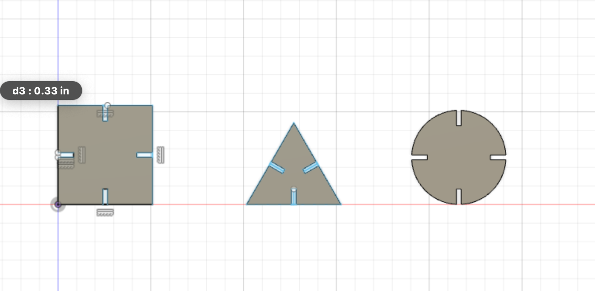

Week 2: 2D Design and Cutting
This week, I messed around with a press kit and got to learn how to use the laser engraver as well as the vinyl cutter. I messed around a made a Harvard shield on cardboard with the laser cutter. I used a previous dxf file and used the rhinolaser software to make it. I also got to meddle around with Fusion360 a bit, a software I haven't used in a while, so been refreshing myself.

I accidentally did next Tuesday's assignment instead of today's. These are pretty simple but I tried making these in 30 minutes after realizing my mistake! I haven't gotten to actually print my design but I'll be doing it after class today. Will be updating this soon.
